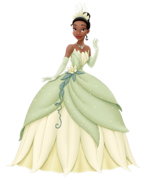

Tiana
Es una joven camarera que sueña con ser dueña de su propio restaurante algún día.
Durante una noche de una fiesta de disfraces, ella se encuentra con el Príncipe Naveen, quien ha sido convertido en rana por un hechicero, y le dice que si le besa se convertirá de nuevo en humano. Sin embargo, tras darle un beso, es Tiana quien se convierte en rana. Los dos, convertidos en ranas, van en busca de alguien que rompa el hechizo.
